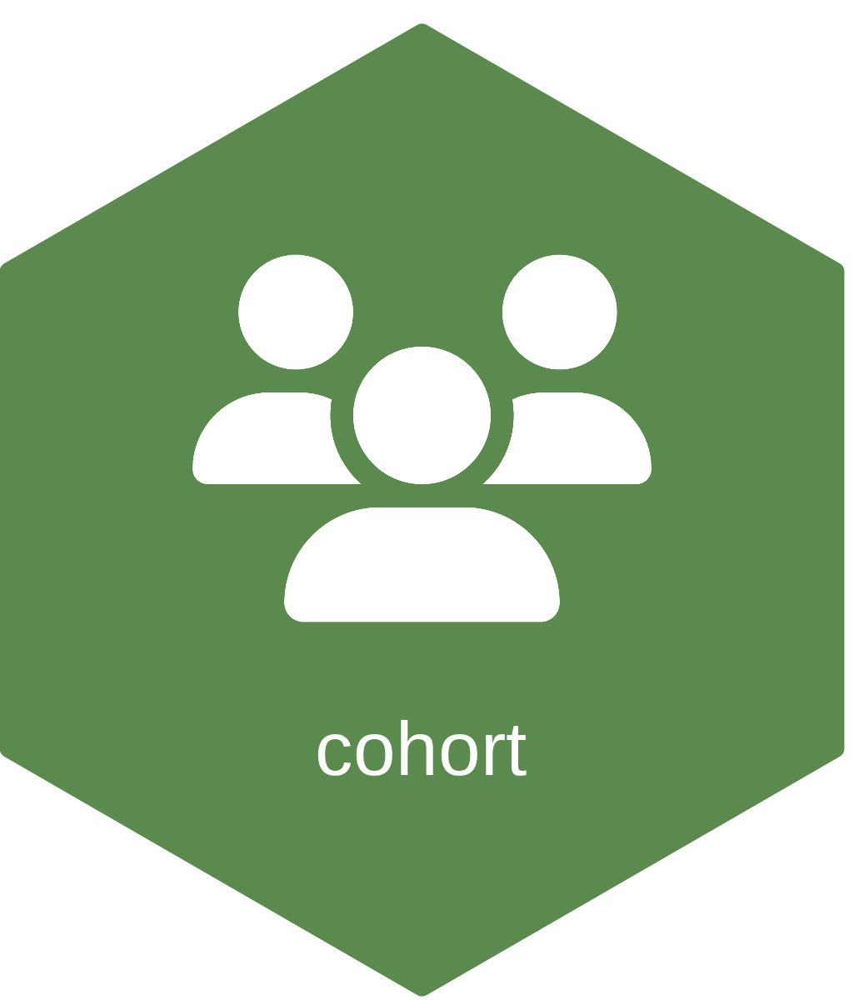

cohort 
cohort is a small R package for building analytic cohorts with full provenance: branched cohort trees, per-step exclusion logging, schema validation at branch boundaries, cached derived artifacts, and CONSORT diagram generation.
The framework cleanly separates cohort definition from analysis: it produces analytic data tables that downstream code consumes.
Installation
# CRAN (when published)
install.packages("cohort")
# Development version
remotes::install_github("raubreywhite/cohort")Quick example
library(cohort)
library(data.table)
d <- data.table(
id = 1:10,
age = c(17, 22, 35, NA, 41, 28, 19, 16, 67, 50),
sex = c("F", "M", "F", "F", NA, "M", "M", "F", "F", "M")
)
cp <- CohortPipeline$new()
cp$load(d)
# Root-level exclusions on the shared base
cp$exclude_and_track("root", "Missing sex", "is.na(sex)")
cp$exclude_and_track("root", "Missing age", "is.na(age)")
cp$exclude_and_track("root", "Under 18", "age < 18")
# Branch into a sub-cohort
cp$new_cohort("adults_female", from = "root")
cp$exclude_and_track("adults_female", "Not female", "sex != 'F'")
# Cache a derived artifact on the cohort
cp$set_artifact("mean_age", from = "adults_female",
fn = function(dt, sib) mean(dt$age))
cp
#> <CohortPipeline>
#> root: loaded = 10, included = 6, excluded = 4, 3 exclusion step(s)
#> adults_female: branched from root at n = 6, own excluded = 1, included = 5, 1 own step(s)
cp$consort()
#> branch parent step reason expr_str n_excluded n_remaining
#> 1: root <NA> 1 Missing sex is.na(sex) 1 9
#> 2: root <NA> 2 Missing age is.na(age) 1 8
#> 3: root <NA> 3 Under 18 age < 18 2 6
#> 4: adults_female root 4 Not female sex != 'F' 1 5Cached artifacts are plain R objects — retrieve them with cp$get_artifact("adults_female", "<artifact>") and pass them straight into whatever consumes analytic data.
Documentation
- Introduction vignette
-
?CohortPipelinefor the full method reference
Design
- Shared base, per-branch index. A single copy of the base table is stored. Each branch holds an O(n) integer status vector. Branching never copies the data values.
- String-form exclusion predicates. Exclusions are passed as strings so the cohort definition is serializable and auditable.
-
No in-band status column. The user’s data table is never mutated. The
.cohort_statuscolumn is reconstructed only when$get_everyone()is called. -
Mutation-safe by default.
$get_included()and the$set_artifact()callback contract both default to handing out independent copies.
See NEWS.md and the package vignette for details.